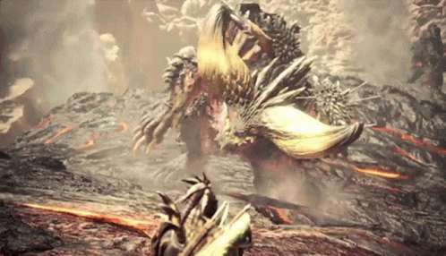

Monster Hunter: World
A lot of fun solo or with friends or even with random people online, this games brings the series to the mainstream without all of the jank of the older titles. Don't be fooled though, while a lot of the Jank has been removed it is still a very hard game. But that difficulty brings the best out of you. The games give an insane sense of acomplishment when you finally overcome that wall. This game style is hard to get into, but when it all finally clicks you can understand why people sink thousands of hours into the game. I have even done some personal speedrunning of my favorite monsters.